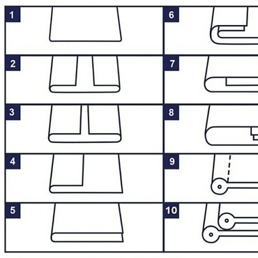

Serviços

FA Socorte fornece diversos artigos de Fitas em Viés (Algodão, Poliéster-Algodão, Cetim, Outros) e realiza também este serviço em matéria-prima do cliente.

Fita técnica dobrada ao meio com costura que incorpora ou não um cordão ou outra alma.

A Socorte desenvolve continuamente novas técnicas e processos de fabrico. Não hesite em contactar-nos para qualquer conselho.
Fita singela ou simples sem qualquer tipo de vincos.
Fita técnica dobrada ao meio com costura que incorpora ou não um cordão ou outra alma.